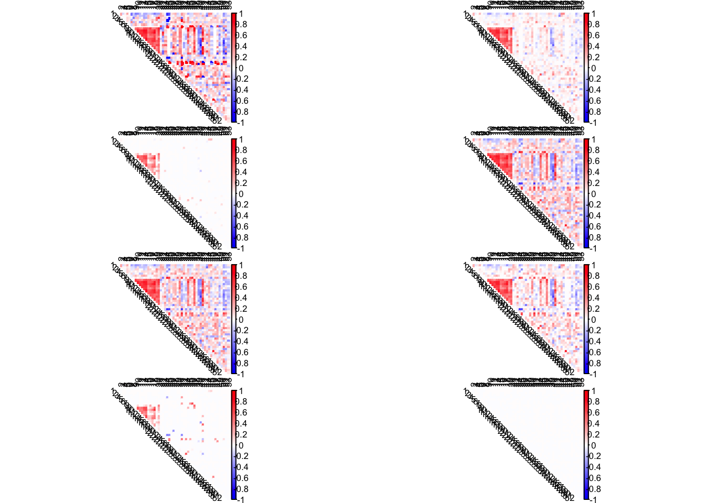
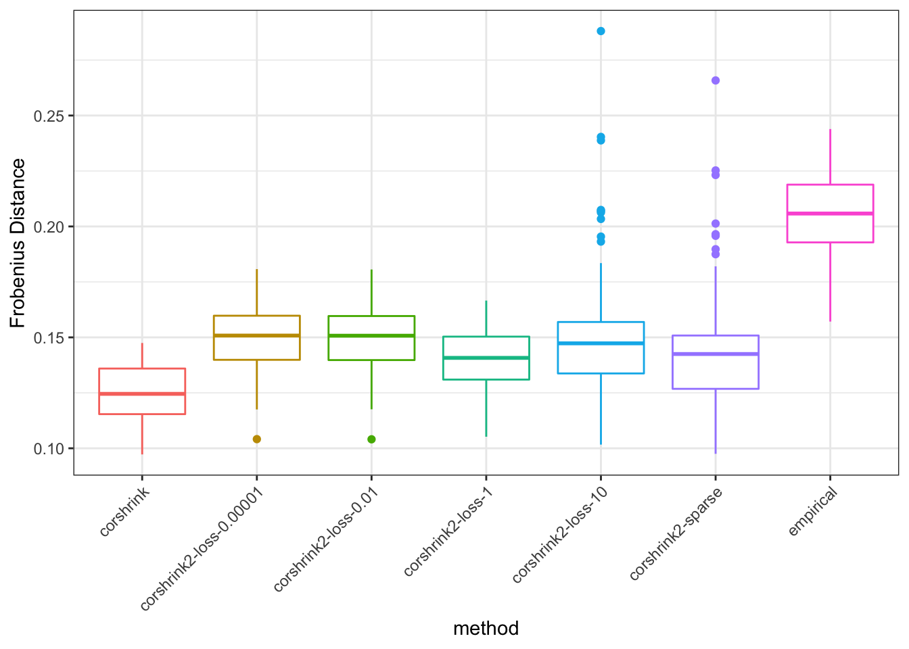

Last updated: 2019-01-16
workflowr checks: (Click a bullet for more information) ✖ R Markdown file: uncommitted changes
The R Markdown is untracked by Git. To know which version of the R Markdown file created these results, you’ll want to first commit it to the Git repo. If you’re still working on the analysis, you can ignore this warning. When you’re finished, you can run wflow_publish to commit the R Markdown file and build the HTML.
✔ Environment: empty
Great job! The global environment was empty. Objects defined in the global environment can affect the analysis in your R Markdown file in unknown ways. For reproduciblity it’s best to always run the code in an empty environment.
✔ Seed:
set.seed(20190114)
The command set.seed(20190114) was run prior to running the code in the R Markdown file. Setting a seed ensures that any results that rely on randomness, e.g. subsampling or permutations, are reproducible.
✔ Session information: recorded
Great job! Recording the operating system, R version, and package versions is critical for reproducibility.
✔ Repository version: 31c2ff0
wflow_publish or wflow_git_commit). workflowr only checks the R Markdown file, but you know if there are other scripts or data files that it depends on. Below is the status of the Git repository when the results were generated:
Ignored files:
Ignored: .DS_Store
Ignored: .Rhistory
Ignored: .Rproj.user/
Untracked files:
Untracked: analysis/missingness_on_variance.Rmd
Untracked: analysis/predictive_corshrink_sparse.Rmd
Untracked: analysis/predictive_corshrink_sparse_slack.Rmd
Untracked: data/person_tissue_genes_voom.rda
Untracked: docs/figure/predictive_corshrink_sparse.Rmd/
Untracked: docs/figure/predictive_corshrink_sparse_slack.Rmd/
Untracked: output/PLIN1_predictive_perform_corshrink_sparse_loss.rda
Untracked: output/PLIN1_predictive_perform_corshrink_sparse_slack.rda
Unstaged changes:
Modified: analysis/test_icorshrink_PLIN1.Rmd
library(corrplot)corrplot 0.84 loadedlibrary(CorShrink)
library(CVXR)
Attaching package: 'CVXR'The following object is masked from 'package:stats':
powerdata("sample_by_feature_data")
data("common_samples")tau_range = c(seq(0.1, 1, length.out = 10))
measure = c()
train_sample_id = sample(nrow(sample_by_feature_data), 300, replace = FALSE)
predict_sample_id = setdiff(1:nrow(sample_by_feature_data), train_sample_id)
################## Correlation matrix for training data #########################
train_datamat = sample_by_feature_data[train_sample_id,]
empirical_cor = cor(train_datamat, method = "pearson", use = "pairwise.complete.obs")
empirical_cor[is.na(empirical_cor)] = 0
################# Correlation matrix for prediction data #########################
predict_datamat = sample_by_feature_data[predict_sample_id,]
cormat2 = cor(predict_datamat, method = "pearson", use = "pairwise.complete.obs")
cormat2[is.na(cormat2)] = 0out1 = CorShrinkData(train_datamat, sd_boot = FALSE, image = "null",
image.control = list(tl.cex = 0.2))
estcor1 = out1$cor
out2 = CorShrink2Data(train_datamat)
estcor2 = out2The Frobenius distance between the estimated correlation matrices from the training data and that estimated from the left out prediction data.
mean((estcor1 - cormat2)^2) ####### CorShrink[1] 0.1271884mean((estcor2 - cormat2)^2) ####### CorShrink2[1] 0.1367681data("sample_by_feature_data")
data("common_samples")
list_cors = list()
temp = cor(sample_by_feature_data, use = "pairwise.complete.obs")
colnames(temp)=NULL
rownames(temp) =NULL
list_cors[[1]] = temp
corshrink_out = CorShrinkData(sample_by_feature_data, sd_boot = FALSE, image = "null",
image.control = list(tl.cex = 0.2))
temp2 = corshrink_out$cor
colnames(temp2)=NULL
rownames(temp2) =NULL
list_cors[[2]] = temp2
list_cors[[3]] = CorShrink2Data(sample_by_feature_data)
list_cors[[4]] = CorShrink2DataLoss(sample_by_feature_data, alpha = 1e-05)
list_cors[[5]] = CorShrink2DataLoss(sample_by_feature_data, alpha = 1e-02)
list_cors[[6]] = CorShrink2DataLoss(sample_by_feature_data, alpha = 1)
list_cors[[7]] = CorShrink2DataLoss(sample_by_feature_data, alpha = 10)
list_cors[[8]] = CorShrink2DataLoss(sample_by_feature_data, alpha = 100)
par(mfrow = c(4, 2))
for(m in 1:8){
col2 <- c("blue", "white", "red")
corrplot(as.matrix(list_cors[[m]]), diag = FALSE, col = colorRampPalette(col2)(200), tl.pos = "td",
tl.col = "black", tl.cex = 0.8, rect.col = "white",
na.label.col = "white", method = "color", type = "upper")
}
Choose a random set of 100 genes from GTEx.
person_tissue_genes = get(load("data/person_tissue_genes_voom.rda")) ## 544 x 53 x 16069 '
data("common_samples")
sets_of_genes = sample(dim(person_tissue_genes)[3], 100, replace = FALSE) Choose a training dataset randomly of 300 individuals and then use that to predict the correlation structure for the left-out individuals.
measure = c()
for(numgene in 1:length(sets_of_genes)){
train_sample_id = sample(nrow(person_tissue_genes), 300, replace = FALSE)
predict_sample_id = setdiff(1:nrow(person_tissue_genes), train_sample_id)
train_datamat = person_tissue_genes[train_sample_id,,sets_of_genes[numgene]]
empirical_cor = cor(train_datamat, method = "pearson", use = "pairwise.complete.obs")
empirical_cor[is.na(empirical_cor)] = 0
corshrink_out = CorShrinkData(train_datamat, sd_boot = FALSE, image = "null",
image.control = list(tl.cex = 0.2))
corshrink_cor = corshrink_out$cor
corshrink1_cor = CorShrink2Data(train_datamat)
corshrink2_cor = CorShrink2DataLoss(train_datamat, alpha = 1e-05)
corshrink3_cor = CorShrink2DataLoss(train_datamat, alpha = 1e-02)
corshrink4_cor = CorShrink2DataLoss(train_datamat, alpha = 1)
corshrink5_cor = CorShrink2DataLoss(train_datamat, alpha = 10)
predict_datamat = person_tissue_genes[predict_sample_id,,sets_of_genes[numgene]]
cormat2 = cor(predict_datamat, method = "pearson", use = "pairwise.complete.obs")
cormat2[is.na(cormat2)] = 0
measure = rbind(measure, c(mean((cormat2 - empirical_cor)^2),
mean((cormat2 - corshrink_cor)^2),
mean((cormat2 - corshrink1_cor)^2),
mean((cormat2 - corshrink2_cor)^2),
mean((cormat2 - corshrink3_cor)^2),
mean((cormat2 - corshrink4_cor)^2),
mean((cormat2 - corshrink5_cor)^2)))
cat("We are at numgene", numgene)
}measdure = get(load("output/PLIN1_predictive_perform_corshrink_sparse_loss.rda"))df1 = data.frame("frobenius" = c(measure[,1], measure[,2], measure[,3],
measure[,4], measure[,5], measure[,6],
measure[,7]),
"method" = c(rep("empirical", dim(measure)[1]),
rep("corshrink", dim(measure)[1]),
rep("corshrink2-sparse", dim(measure)[1]),
rep("corshrink2-loss-0.00001", dim(measure)[1]),
rep("corshrink2-loss-0.01", dim(measure)[1]),
rep("corshrink2-loss-1", dim(measure)[1]),
rep("corshrink2-loss-10", dim(measure)[1]))
)
library(ggplot2)
p <- ggplot(df1, aes(method, frobenius, color = method)) + ylab("Frobenius Distance")
p3 <- p + geom_boxplot() + theme_bw() + theme(legend.position="none") + theme(axis.text.x = element_text(angle = 45, hjust = 1))
p3
sessionInfo()R version 3.5.1 (2018-07-02)
Platform: x86_64-apple-darwin15.6.0 (64-bit)
Running under: macOS High Sierra 10.13.6
Matrix products: default
BLAS: /Library/Frameworks/R.framework/Versions/3.5/Resources/lib/libRblas.0.dylib
LAPACK: /Library/Frameworks/R.framework/Versions/3.5/Resources/lib/libRlapack.dylib
locale:
[1] en_US.UTF-8/en_US.UTF-8/en_US.UTF-8/C/en_US.UTF-8/en_US.UTF-8
attached base packages:
[1] stats graphics grDevices utils datasets methods base
other attached packages:
[1] ggplot2_3.1.0 CVXR_0.99-2 CorShrink_0.1-6 corrplot_0.84
loaded via a namespace (and not attached):
[1] tidyselect_0.2.5 purrr_0.2.5 ashr_2.2-23
[4] reshape2_1.4.3 lattice_0.20-35 colorspace_1.3-2
[7] htmltools_0.3.6 yaml_2.2.0 gmp_0.5-13.2
[10] rlang_0.3.0.1 R.oo_1.22.0 pillar_1.3.0
[13] withr_2.1.2 glue_1.3.0 Rmpfr_0.7-1
[16] R.utils_2.7.0 bit64_0.9-7 bindrcpp_0.2.2
[19] scs_1.1-1 foreach_1.4.4 plyr_1.8.4
[22] bindr_0.1.1 stringr_1.3.1 munsell_0.5.0
[25] gtable_0.2.0 workflowr_1.1.1 R.methodsS3_1.7.1
[28] codetools_0.2-15 evaluate_0.12 labeling_0.3
[31] knitr_1.20 pscl_1.5.2 doParallel_1.0.14
[34] parallel_3.5.1 Rcpp_1.0.0 corpcor_1.6.9
[37] backports_1.1.2 scales_1.0.0 truncnorm_1.0-8
[40] bit_1.1-14 gridExtra_2.3 digest_0.6.18
[43] stringi_1.2.4 dplyr_0.7.8 grid_3.5.1
[46] rprojroot_1.3-2 ECOSolveR_0.4 tools_3.5.1
[49] magrittr_1.5 lazyeval_0.2.1 glmnet_2.0-16
[52] tibble_1.4.2 pkgconfig_2.0.2 crayon_1.3.4
[55] whisker_0.3-2 MASS_7.3-50 Matrix_1.2-14
[58] SQUAREM_2017.10-1 assertthat_0.2.0 rmarkdown_1.10
[61] iterators_1.0.10 R6_2.3.0 git2r_0.23.0
[64] compiler_3.5.1 This reproducible R Markdown analysis was created with workflowr 1.1.1